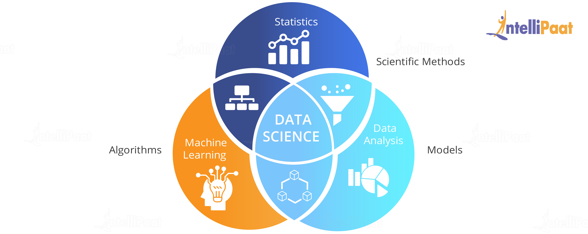
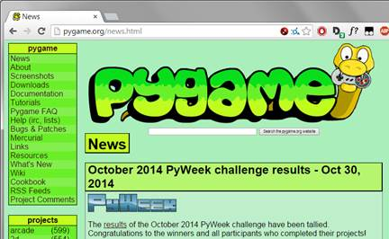
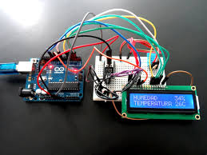

- Aqui estão os projetos relacionados à programação.
Projeto de CieDados
Fizemos uma análise de dados de uma determinada organização, nela fizemos variáveis qualitativas e quantitativas para facilitar na análise ao longo do tempo.

Jogo
Foi feito um jogo em py-game, para apresentar-lo em uma feira de jogos.

Estação Meteorológica
- Este projeto se trata de uma estação meteorológica que media temperatura, humidade e luz. Para que ela funcionasse precisamos montar a placa virtualmente para que que depois ela fosse cortada na frisadora e finalmente fosse usada para a soldagem dos componentes. Também precisamos programar em c, linguagem do arduino, para que ela mostrasse os valores na placa em que era mostrada. 